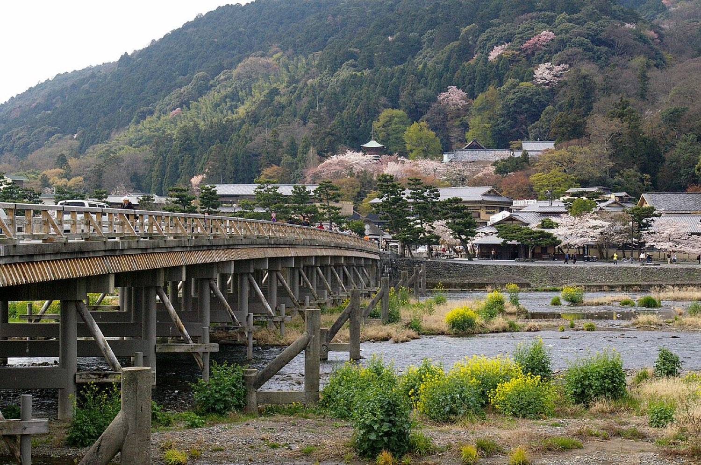
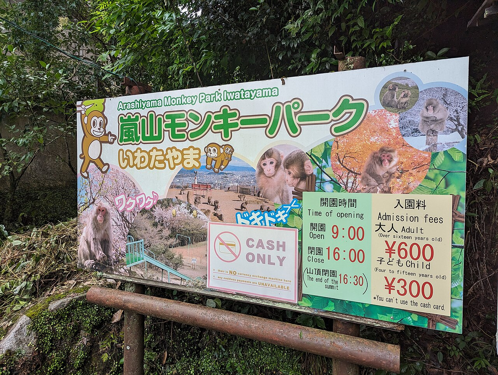

Kyoto's western edge, where the mountains meet the river: the famous bamboo forest, a monkey mountain, and a riverside that has been the city's getaway for a thousand years.



Things to do
01Bamboo Grove
The towering green corridor from every Japan photo set. Short, surreal, and best before the tour buses.
02Monkey Park Iwatayama
A 20-minute hike to a hilltop where snow monkeys roam free and the view covers all of Kyoto.
03Togetsukyo Bridge
The Moon Crossing bridge over the Katsura River, the district's centerpiece.
04Tenryu-ji
A World Heritage zen temple whose garden borrows the mountains as its backdrop, the bamboo grove exits from its north gate.
05Riverside lunch
Yudofu (hot tofu) is the local specialty, or grab unagi over rice.
Good to know
- Be at the bamboo grove by 8am, it's a different place before the crowds.
- In the monkey park the humans are the ones behind the fence at feeding windows.
- Rent bikes if the heat allows, the district spreads out.